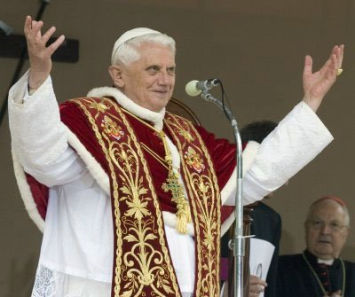
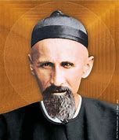

"PREFÁCIO"
“O Papa Bento
XVI na sua oração dominical do Ângelus mencionou e fez uma saudação aos
participantes das Olimpíadas de Pequim em 2008. E 
“Um Missionário é um mistério. E é isso mesmo que ele deve ser, já que o Mistério de CRISTO é anunciado por ele, e nele é revelado. O Padre José Freinademetz foi um Missionário da SOCIEDADE DO VERBO DIVINO, e por isso mesmo é necessário esclarecer que ele participou da MISSÃO DO VERBO DE DEUS, como todos os Sacerdotes Missionários participam, todas às vezes e sempre que conduzem pelo Caminho e para a Luz de DEUS, a humanidade de hoje”.

“Esta verdade coloca São José Freinademetz como um grande Santo dos tempos modernos, que verdadeiramente ele é. Os católicos sentem orgulho por esta figura que, partindo das montanhas Dolomitas da Itália, de uma pequenina e minúscula aldeia, conseguiu ir bem longe levando a palavra de DEUS até mesmo ao grande país, que é a China”.
Nós do APOSTOLADO DOS SAGRADOS CORAÇÕES, diante destas palavras do Papa Bento XVI, ficamos felizes e honrados em apresentar este Site, a Vida e a Obra do Padre italiano Santo Joseph Freinademetz. É uma história bonita, cativante e reveladora, de um coração sincero e amoroso por um grande povo. Com prazer a publicamos para conhecimento dos nossos leitores.
“APOSTOLADO DOS SAGRADOS CORAÇÕES”
http://www.apostoladosagradoscoracoes.com/